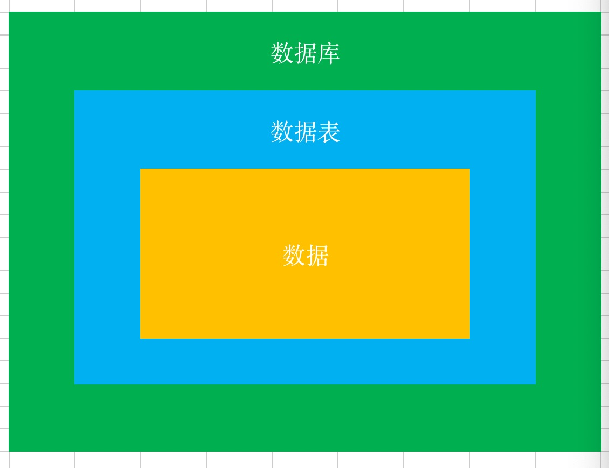
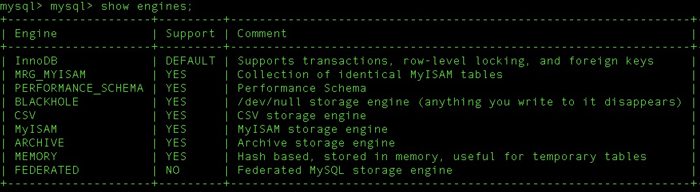

将数据放到表中，将表放到数据库中。 
一个数据库可以有多张表，每个表都有自己唯一的名字来标识自己。
show tables;
数据表有一些可特性，这些特性定义了数据以哪种结构存放在数据表中。
show engines;

数据表是由列组成的，我们称之为字段 ,所有表都是由一个或者多个字段组成的。
列
字段
desc staff;
表中的数据是按行存储的，每一行都类似于面向对象编程里的一个对象。
select * from staff limit 10;